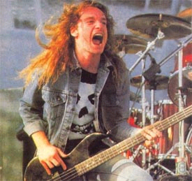
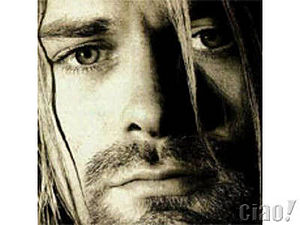

Gods Band
 De: La Frikipedia, la enciclopedia extremadamente seria.
De: La Frikipedia, la enciclopedia extremadamente seria.
Gods Band es una banda grunge, hard rock, heavy metal, rock n roll, death metal, punk, symhonyc, IP anónima, thrash metal, jazz,etc. Ha sido muy reconocida en el mundo,el cielo, el infierno y IP anónimaLand por tener mas de 100000000000000 miembros
Historia
 Cliff en su pose de Dios explicandole que fingieron su suicidio y que el cadaver era de un reGAYtonero
Todo comenzo cuando beethoven caminando por el infierno yeahhhhhh!!!!!!! cielo tuvo una maldita buena idea que fue hacer un banda de grune, hard rock, heavy metal, rock n roll, death metal, punk, symhonyc, IP anónima, thrash metal, jazz, etc.
Beethoven busco por todo el infierno yeahhhhhhhhhhh de nuevo cielo a los mejores musicos y recluto a freddie mercury, Cliff Burton y a bon scott.Freddie le sugirio que contratara a Mozart. Esto molesto a beethoven y asesino a freddie (tan tan tan tán)pero se olvido que volveria al infierno yeahh cielo.
Cuando Freddie volvio fueron en busca de mas miembros y encontraron a IP anónima que conocia a chuck norris que la trataron de atrapar con una pokeball, como no la atraparon ni con una masterball decidieron proponerle un trato. Estar en la banda y unas galletitas oreo sabor a shit.Cuando beethoven le dijo a chuck norris sobre su idea no le hizo caso pero acepto cuando cliff burton Cliff Burton se lo pidio por ser un semidios asi que les dio permiso y formaron la banda con IP anónima, beethoven, Cliff Burton, freddie mercury y chuck norris (aunque Chuck solo se encarga de la produccion, de los coros guturales y de los solos de triangulo electrico)
Monesvol los escuchó y le gusto su genero Thrash symphonic IP anónima piano Metal asi que decidio conseguirles un contrato con "Spaghetti great gigante bola Productions" informandole que en la banda estaba Cliff Burton y le mando un Demo de su cancion "The 5ª Bohemian Rhapsody whit IP anónima whit bells tolls in Orion" hicieron un contrato con la great bola de "spagueti gigant" (el spanglish pude variar) con la condicion de que consiguieran a un guitarrista que atrajese al publico.Mataron Contrataron a Kurt Cobain para hacer el papel de 2ºcantante y guitarrista ritmico (no por ello peor)
 Kurt(Enfadado)diciendo ¿Como me han matado?¿Que les dire a mis fans?
Miembros
Kurt sintiendose aliviado por la resouesta de cliff
Esta banda como ya se dijo tiene 100000 miembros sin contar a la orquesta de beethoven.
- Clifford Lee Burton : Bajo y no se necesita naa mas ¡Es Cliff Burton!.
- Freddie Mercury: Piano Nª1 y el que contrata a putas para las orgias.
- Ludwin Van Ven Vin Von Vun Beethoven: Piano y Director de la orquesta y nada mas.
- Kurt Cobain: Guitarra Ritmica, Vocales,y suicidios.
- Chuck Norris: Triangulo electrico y repartidor de hostias.
- John Lenon: Piano Nº3!! y guitarra y comprador de drogas.
- Jimmi Hendrix: Guitarra y comprador de drogas(normalmente las compra con lenon).
- Bon Scott: Vocales y gaita(la misma que toco con AC/DC en la cancion "it´s a long way to de top").
- Euronymus:Guitarra(de todos los guitarristas este es el mas jebi).
- Ray Chrales: Piano numero nosekuanto y ciego que pide limosna para comprar mas drogas.
Antiguos
- Elvis: Lo votaron porque ya no necesitaban otro comprador de drogas
- Niki Sixx: Cuando lo contrataron revivio porque le metieron adrenalina
doctor hijo de puta
- Joesy Ramone: Lo expulsaron por quere hacer canciones de 3 acordes y 2 minutos pero todas las canciones de THE GODs Band duran 95 minutos de minimo y ocupan todas las notas conocidas por el hombre y otras conocidos por los monos.
Influencias
Esta banda a tomado influencias jebis,hardrockers,jazzeras,poperas(PERO DE LAS BUENAS NO DE LA CRAP K ACEN HOY EN DIA),sinfonicas,black metaleras,grungeras y thrasheras.
Esta banda banda ha influenciado a todas las bandas de musica(MUSICA no reGAYton) del mundo porque tienen el poder de viajar en el tiempo y inventar todos los generos musicales del mundo menos el reGAYton que fue un invento del idiota del niño de la tarola haciendo un ritmo idiota mientras se pajeaba.
Discos
- IP anónima going to the Highway to hell singin.
- We are the Champions for Elise and the Voodoo Child.
- Imagine the bells tolls of the teen spirit of billie jean of the deathcrush (nombre más corto de todos sus discos).
- Dirty deeds of the 5 Sonata of IP anónima.
- Hey Master of Joe.
¿Sabías que...
- ...IP anónima es el genio detras de todos ellos?
- ...Menos de Cliff por ser un Dios?
- ...Si entendiste todo lo de este articulo es que sabes de música?
- ...Si entendiste solo lo Jebi eres Jebi?
- ...Que en realidad no tocan punk desde que se fue el RAMONE?
- ...Que mientras estas leyendo esto Freddie esta haciendo una orgia con tu madre y tu padre?
- ...Que probablemente borren este articulo?
- ...Si lo estas leyendo significa que no lo borraron?
- ...Mira atraz es la cara de michael jackson?
- ...Te lo creiste?
- ...BoN Scott toca la gaita en la cancion It´s a long way to the top?
- ...Euronimus es el mejor guitarrista entre todos ellos?
- ...Se mas de musica que tu?
- ...Lo anterior es falso, lo escribio un wey que de musica no sabe nada?
- ...Van a dar un concierto mientras el mundo se acaba en el 2012?
- ...A menos que te hallas demorado en captarlo?
- ...Cliff Burton es el puto amo?
- ...Cliff es el unico bajista en la banda?
- ...Y el es suficiente?
- ...Shitnot plagio la tendencia de gods band teniendo ellos tmbien 10000 integrantes?
- ...Eso es todo?
Autor(es):
- Veni Vidi Vici
- Dark temptation
- Ricardoxxxlo
- 62666
- The Jack
- Alexsaga
- Dancob
- Ajax87
- ProfetaAesedefiano
Frikipedia 2005-2016, Licencia
GFDL 1.2 - Extraído por FrikiLeaks